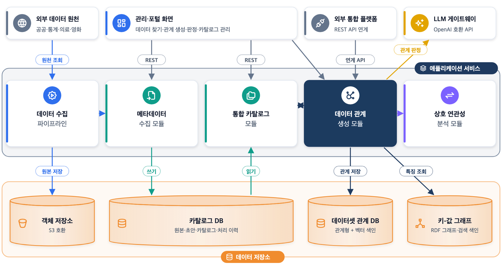
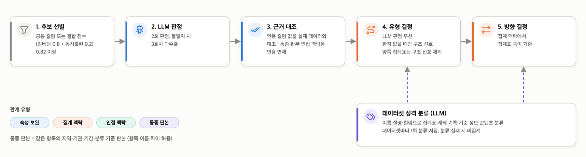
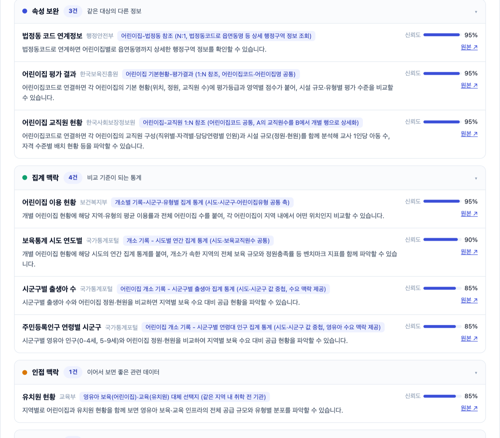
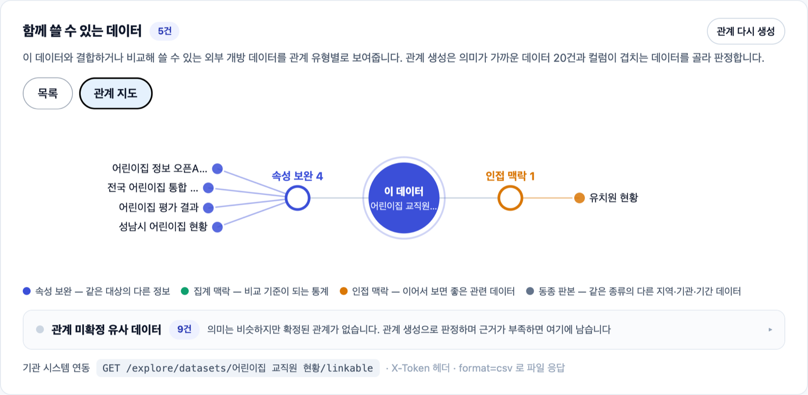
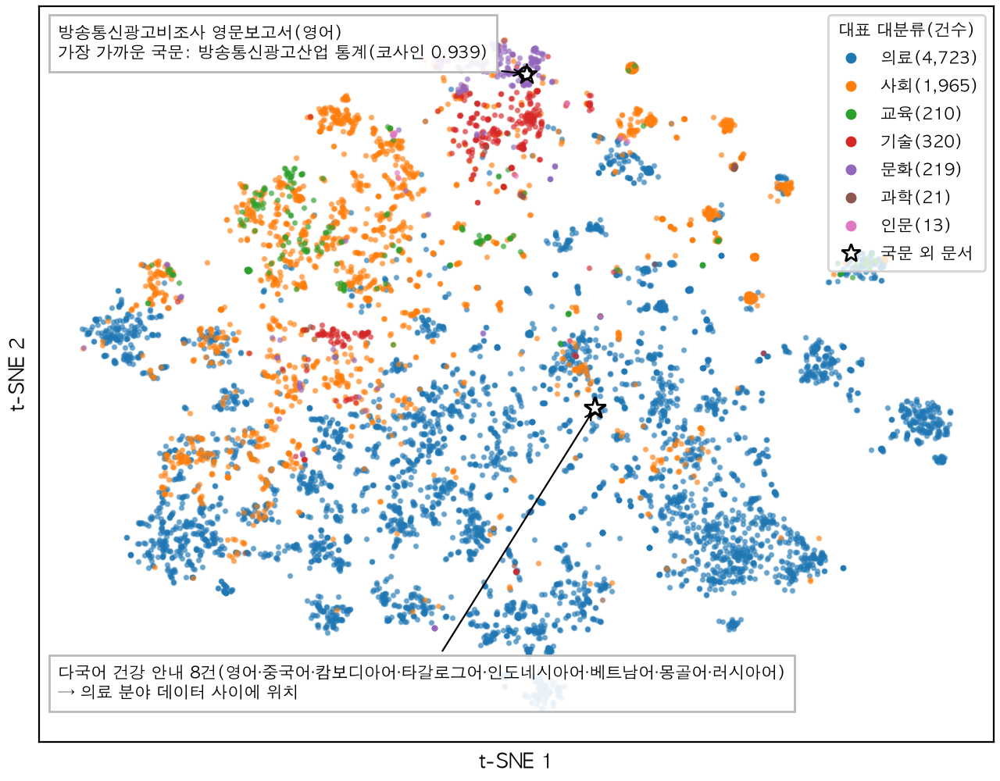
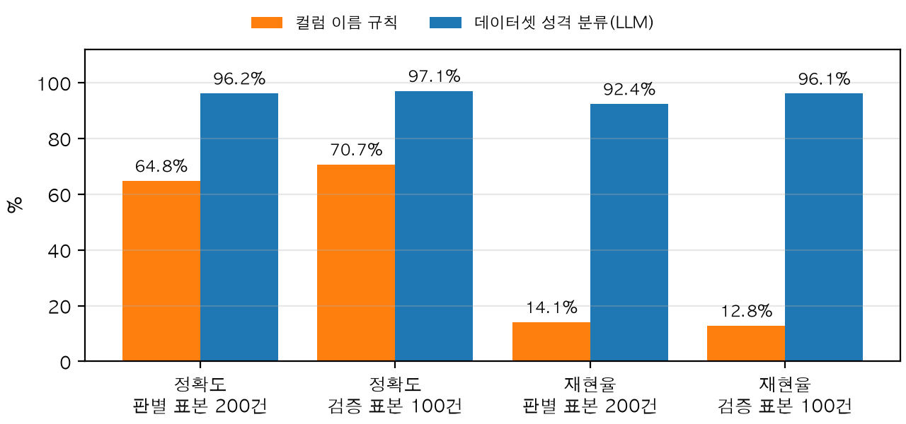
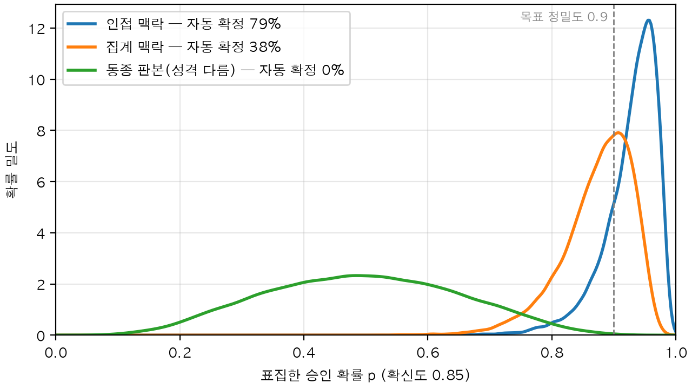

S배경 — 함께 쓸 외부 데이터 찾기는 전부 수작업
공공데이터포털 7,000건, 국가통계포털 통계표 수백 건 — "내 데이터와 결합·비교해 쓸 외부 데이터"는 검색어로 뒤지고 컬럼을 눈으로 대조하는 수작업이었습니다. 이 서비스는 제목·설명·컬럼·샘플만으로 관계를 판정하고 근거와 함께 저장해 유형별로 검색되게 합니다. 컨소시엄 안에서 관계 생성 모듈의 판정 파이프라인과 백엔드를 전담했습니다.
T역할
A설계와 구현

01관계 판정 파이프라인 — 후보 선별 → LLM 판정 → 근거 대조 → 유형·방향 → 확정 정책

- 후보 선별 — 공통 컬럼 규칙 또는 결합 점수(임베딩 0.8 + PPMI-SVD 0.2) ≥ 0.82인 쌍만 LLM으로. 쌍당 호출 1.65회
- LLM 판정 → 근거 대조 — 유형·근거·확신도를 구조화 출력으로(2회, 불일치 시 다수결). 인용한 컬럼·값이 실제 데이터에 없으면 기각
- 확정 정책 — 승인 확률이 목표 정밀도 이상이면 자동 확정, 아니면 판정 대기. 운영자의 승인·반려가 정책을 다시 학습
02관계 유형 4종 — 시나리오로 정의, 전수 통계로 검증
- 속성 보완(상세 → 기준) · 집계 맥락(집계 → 기준) · 인접 맥락 · 동종 판본. AI 제안 후보(공간·시간 중첩)는 전수 통계(채움률 5~6%)로 기각
- 판정 사유(왜 관계인가)와 활용 설명(결합하면 무엇을 아는가)을 분리 저장, 결합 키·신뢰도와 함께 노출. 전 유형 DCAT 3 · PROV-O 매핑

결합 키 · 활용 설명 · 신뢰도 유형별 묶음 — 집계 맥락은 비교 기준 통계03탐색 · 판정 · 환류
- 데이터셋 상세에 유형별 목록 · 관계 지도, 기관 시스템은 REST(JSON·CSV). 근거 부족 쌍은 '미확정'으로 남겨 재판정
- 카탈로그 변경 → 바뀐 데이터셋이 낀 쌍만 증분 판정 → 환류. 자동 확정 미달은 관리 화면 승인·반려, 그 판정이 정책의 학습 신호

유형별 관계 지도 근거 부족 → 미확정으로 남김04문서형 · 외국어 데이터 편입 — 표가 아닌 보고서, 국문이 아닌 문서도 관계 후보로
공개 데이터의 일부는 표가 아니라 보고서·안내문이고, 영문 보고서나 8개 언어 건강 안내처럼 국문이 아닌 것도 있습니다. 기존 파이프라인은 컬럼이 있는 정형 데이터만 다루고 임베딩 모델(ko-sroberta)도 국문 전용이라, 이런 데이터는 "함께 쓸 수 있는 데이터"에서 통째로 빠져 있었습니다.
- 문서 편입 — 문서형 파일 306건의 본문 추출(PDF·HWP·HWPX·DOCX, 형식은 확장자가 아닌 내용으로 판별)·언어 식별·LLM 분류 후 정형 데이터셋과 같은 원장에 등록 → 같은 판정 파이프라인을 탐
- 교차 언어 — 임베딩을 multilingual-e5-base로 교체, 7,471건 재계산. 유사도 분포가 달라져 후보 임계값을 무작위 쌍 분포로 환산(0.4 → 0.82, 기존 확정 쌍 통과율 81% 유지)
- 결과 — 영문 질의 Hits@10 28 → 44%, 국문 82 → 92%. 영문 보고서가 같은 주제의 국문 통계 옆에, 다국어 건강 안내가 의료 데이터 사이에 놓임(그림)

05성능 검증 · 공인시험
- 성능지표 3항목 시험 설계·시료·수행 전담, 전부 통과 — F1 0.8698(목표 0.85) · Hits@10 58.3%(목표 50%) · 연계 유형 5종
- 컬럼명이 같아 만점인 쌍은 참고치로 내리고 공개 벤치마크(Valentine) 실세계 쌍 편입, 난수 고정으로 반복 실행 일치
!트러블 슈팅
관계 판정 정밀도 33% — 판정 기준을 "활용 시나리오"에서 "데이터 안의 근거"로 교체
정확도문제
병원 도메인 36쌍 전수 판정 — 재현율 80%, 정밀도 33%. 거의 완전 그래프.
접근
Langfuse 트레이스 150건을 정답과 대조. 오탐 16건의 사유가 전부 "함께 활용할 수 있다"는 가상 시나리오 — 프롬프트의 쓰임새 기준이 원인. 임베딩 유사도는 36쌍 전부 통과, 변별력 0.
과정
확신도 0.85 미만 18건 중 16건이 오탐. 질문을 "근거가 데이터 안에 있는가"로 바꾸고 근거 유형(공유 키 · 값 중첩 · 동일 개체 · 병렬 스키마)을 열거형으로 강제, 임계값 0.7 → 0.8, 2회 다수결.
결과
오탐 16 → 2, 정밀도 1.00 / 재현율 0.73. 이후 "인용 근거를 실제 데이터와 대조"하는 단계로 파이프라인에 고정.
| LLM 확신도 | 정답 (TP) | 오탐 (FP) |
|---|---|---|
| 0.85 ~ 0.98 | 6 | 0 |
| 0.82 | 0 | 2 |
| 0.72 ~ 0.75 | 2 | 14 |
| 저장 임계값 | 정밀도 | 재현율 |
| 0.70 (현행) | 0.33 | 0.80 |
| 0.80 | 0.75 | 0.60 |
| 0.85 | 1.00 | 0.60 |
| 0.80 + 정답 보정 | 1.00 | 0.73 |
후보 선별 상한 결함 의심 — $6 실험으로 "거름 장치"임을 확인, 유지 결정
비용 · 검증문제
500쌍 시범 판정 → 전체 27,620쌍 환산 약 $1.6k · 19시간. 94쌍은 임베딩 ≥ 0.82(평균 0.94)인데 PPMI ≈ 0이라 상한에 걸려 LLM 전 탈락 — "응급의료기관 ↔ 병원" 같은 쌍이라 결함으로 보임.
접근
고치기 전에 측정. 상한을 풀고(max) 탈락 94쌍만 LLM 판정.
과정
비용 $6.48. 인정 5쌍(5%), 전부 인접 맥락. 결함의 증거였던 응급의료기관–병원 쌍도 기각.
결과
상한은 저정밀 쌍을 LLM 전에 거르는 장치. 풀면 비용 +23%에 관계 +2% → 되돌리고 의도된 거름으로 주석화.
| 구간 | 결과 | 비용 |
|---|---|---|
| 후보 500쌍 시범 판정 | 인정 264 (52.8%) | 21분 · LLM 1.65회/쌍 |
| LLM 전 탈락 | 94쌍 — 임베딩 ≥ 0.82, PPMI ≈ 0 | 호출 0 |
| 실험: 상한 풀고 94쌍 판정 | 인정 5 · 기각 89 | $6.48 |
| 전체 27,620쌍 적용 시 | 관계 +2% | 비용 +23% |
| 결정 | 유지(되돌림) — 의도된 거름으로 주석화 | |
집계표 판별 규칙 재현율 14% — 층화 표본 측정 후 LLM 성격 분류로 교체
검증 방법문제
집계 맥락 오분류(확진자 ↔ 예방접종)·방향 오류. 컬럼 이름 규칙(시점 + 측정)의 집계표 추정이 LLM 판정을 덮어씀. 사례 테스트는 통과시켰지만 "드문 경우"라 말할 수치가 없었음.
접근
원장 7,471건에서 층화 무작위 200건을 직접 판독해 정답셋. 규칙과 대안(LLM 성격 분류: 집계표 · 개체 기록 · 기준 정보 · 콘텐츠)을 같은 표본으로 비교, 겹치지 않는 100건으로 재검증.
과정
규칙 정확도 64.8% · 재현율 14.1% — 통계표 0/30, 컬럼 정보 없는 2,261건은 판별 불가. LLM 분류 정확도 96.2% / 97.1%, 재현율 92.4% / 96.1%.
결과
성격을 데이터셋마다 1회 분류·저장해 유형·방향 결정에 사용. 분류 실패는 비집계.

자동 확정 고정 기준 0.85 — 운영자 판정을 학습하는 문맥 밴딧 정책으로 교체
피드백 학습문제
운영자 승인·반려가 다음 판정에 반영되지 않음. 반려는 특정 조합에 집중 — 집계 맥락인데 양쪽 다 집계표(21건 중 12), 동종 판본인데 성격이 다름(7건 중 5). 유형별 승인율 보정으론 못 잡고, 프롬프트 사례 주입은 효과 없음(판정 일치 92.5% 동일).
접근
판정 특징(확신도 · 유사도 · 근거 인용 수 · 양쪽 성격 · 유형)으로 승인 확률을 베이지안 로지스틱 회귀로 학습, 톰슨 샘플링 표집값 ≥ 목표 정밀도 0.9면 자동 확정. 사전분포에 기존 기준과 '유형 정의 위반 조합'을 넣어 피드백 0건에도 종전과 같은 결정.
과정
관계 320건 직접 판독(승인 273 · 반려 47), 도착 순서 30가지 재현, 70/30 별도 검증으로 정책 5종 비교.
결과
정밀도 94.9 → 96.3%, 자동 확정 56.2 → 58.3%. 사전분포만으로 정밀도 98.5% — 이득 대부분은 유형 정의 위반 차단, 학습은 자동 확정 +5.3%p.

R결과
- 관계 생성 백엔드 · 판정 파이프라인 운영 — 원장 7,471건 전 건 분류·임베딩, 후보 선별 → 판정 → 근거 대조 → 확정/대기 → 탐색·환류
- 공인시험 3항목 통과 — 유사 속성 탐지 F1 0.8698 · 관계 생성 정확도 Hits@10 58.3% · 연계 유형 5종
- 관계 유형 정의서 · 연동 설계서(ERD · 인터페이스 정의서) · 3차년도 기술문서, DCAT 포럼 표준 초안 검토 회신
- 특허 출원 (제1발명자) — 「액티브 메타데이터와 그래프 데이터베이스를 활용한 신규 데이터의 잠재적 연관성 자동 탐색 및 관계 확장을 위한 장치」 (10-2026-0068848) · 공개 SW 등록 신청 2건
W기술 선정 이유
+회고 — 다시 한다면
- 적재 직후 전체 생성을 돌려 커버리지와 판정 비용을 먼저 봤을 것
- 관계 정답셋을 처음부터 데이터 안의 근거(공유 키 · 값 중첩)로 정의했을 것
- 규칙 하나마다 층화 표본으로 정확도·재현율을 재는 절차를 처음부터 뒀을 것
* 실제 시스템 코드는 과제 절차에 따라 공개SW로 공개되며, 위 데모는 UI/기능 재현입니다. 화면 캡처는 공개 데이터 기준입니다.